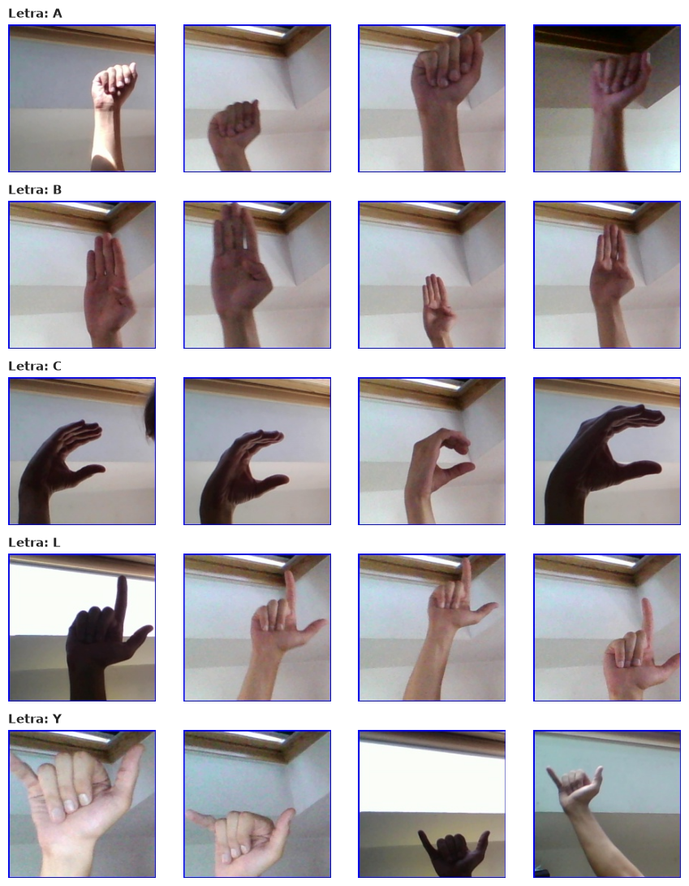
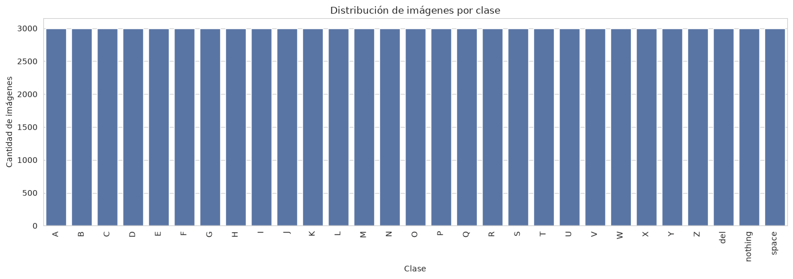
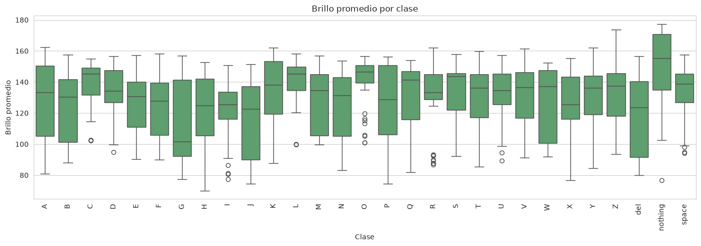
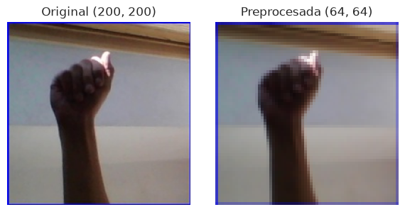
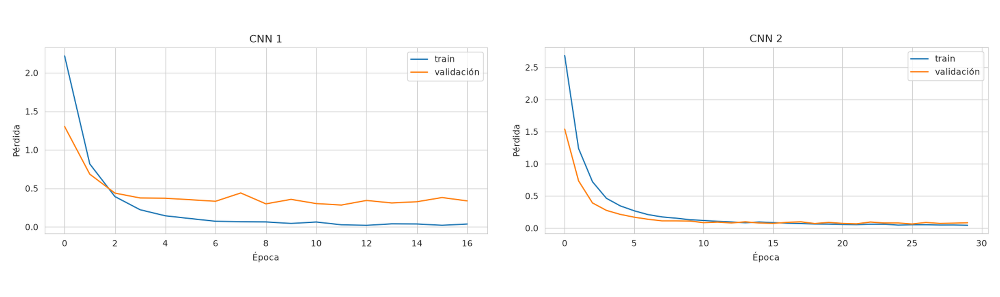
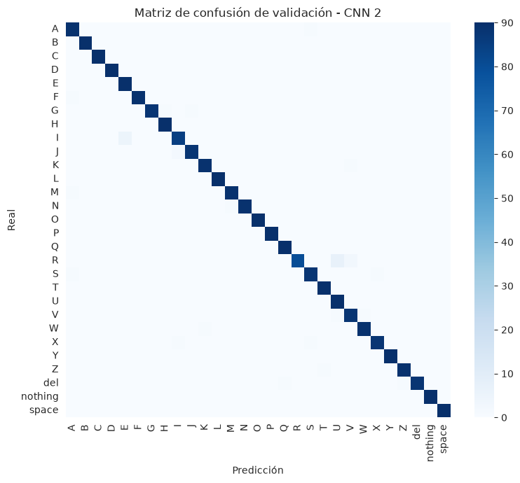
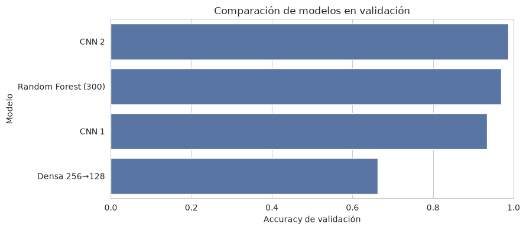
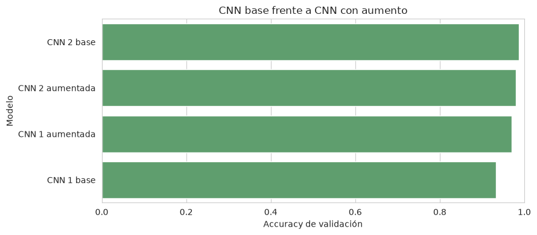
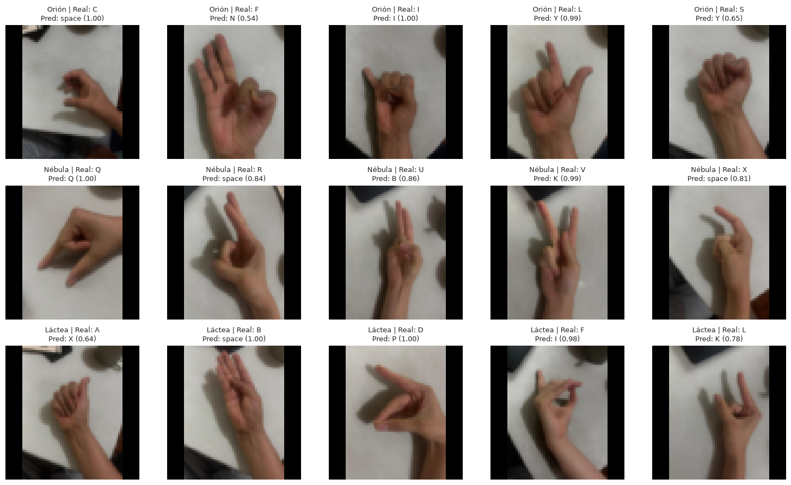

Resumen ejecutivo
Se desarrolló y evaluó un prototipo de clasificación de imágenes estáticas para las 29 clases del conjunto ASL Alphabet: las letras A–Z y las categorías del, nothing y space. El objetivo académico fue recorrer un flujo reproducible de ciencia de datos y contrastar el desempeño interno con condiciones de captura más cercanas a un producto.
La mejor alternativa fue la CNN 2 base, seleccionada exclusivamente por su accuracy de validación de 0.986973. En el test reservado obtuvo pérdida 0.059055 y accuracy 0.986590. Sin embargo, solo acertó 2 de 15 fotografías propias. Esta diferencia revela un cambio de dominio importante: el alto desempeño dentro del conjunto no demuestra por sí solo robustez ante otros fondos, cámaras, encuadres, iluminaciones o escalas de mano.
Contenido y trazabilidad
- Contexto del producto y alcance
- Conjunto de datos y EDA
- Construcción de conjuntos y preprocesamiento
- Modelos y resultados medidos
- Aumento de datos
- Evaluación con fotografías propias
- Accesibilidad, sesgo y uso responsable
- Limitaciones
- Conclusiones y recomendaciones
Fuente de evidencia. Todas las cifras y figuras provienen de los resultados almacenados en el notebook ejecutado notebooks/01_eda_preprocessing.ipynb. No se reentrenaron modelos para elaborar este informe.
1. Contexto del producto y alcance
SignBridge se plantea como un apoyo para reducir barreras de comunicación mediante reconocimiento visual. En este laboratorio, su alcance se limita a clasificar una imagen estática y centrada en una de 29 categorías. No constituye traducción de ASL: una lengua de señas incorpora movimiento, expresiones faciales, gramática, espacio y contexto.
El trabajo cubre indexación de imágenes, análisis exploratorio, partición estratificada, preprocesamiento, dos arquitecturas CNN, tres redes densas, tres configuraciones de Random Forest, aumento de datos y una evaluación externa pequeña con fotografías propias. La selección de modelos usa validación; el test se reserva para una única evaluación final.
2. Conjunto de datos y análisis exploratorio
2.1 Composición y estrategia de muestra
El conjunto contiene 87,000 imágenes JPEG RGB de 200 × 200 píxeles, distribuidas en 29 clases balanceadas con aproximadamente 3,000 imágenes por clase. Para inspeccionar variabilidad sin cargar todo el conjunto en memoria, se construyó primero un índice de rutas y etiquetas. Las visualizaciones usan muestras representativas y reproducibles, mientras el entrenamiento emplea 600 imágenes por clase.


2.2 Variabilidad y grupos visualmente similares
La dificultad no depende únicamente del balance. Varias señas se distinguen por detalles finos: posición del pulgar, separación o cruce de dedos y orientación de la muñeca. Se identificaron los grupos M–N–S, U–V–R, K–V–P, G–H y A–T–S como candidatos razonables a confusión visual.

2.3 Brillo como variable de captura

3. Construcción de conjuntos y preprocesamiento
3.1 Partición y submuestra
El test provisto por Kaggle contiene solo una imagen por clase y no permite una estimación estable. Por ello se construyó una partición propia a partir del directorio de entrenamiento: 70% entrenamiento, 15% validación y 15% prueba, manteniendo estratificación por clase. El test permaneció fuera de la selección de arquitectura e hiperparámetros.
Por costo computacional se tomó una submuestra de 600 imágenes por clase, aproximadamente 17,400 imágenes, preservando las proporciones del split estratificado. Esta decisión reduce cerca de cinco veces el volumen frente al conjunto completo y permite comparar varias familias de modelos bajo el mismo protocolo.
3.2 Transformación de entrada
| Etapa | Decisión | Justificación |
|---|---|---|
| Resolución | 64 × 64, RGB | Reduce memoria y tiempo, conservando estructura espacial suficiente para el prototipo. |
| Escala | Normalización de píxeles a [0, 1] | Estabiliza la optimización de redes neuronales. |
| Etiquetas | Codificador ajustado únicamente con entrenamiento | Evita incorporar información de validación o test al preprocesamiento aprendido. |
| Procesamiento adicional | Sin filtros, segmentación ni ecualización | Mantiene un flujo simple y reproducible; fondo e iluminación quedan expuestos como parte del cambio de dominio. |
| Fotografías propias | Relleno cuadrado centrado y resize a 64 × 64 | Conserva la relación de aspecto y evita deformar la geometría de la mano. |

4. Modelos y resultados medidos
4.1 Redes convolucionales
La CNN 1 funciona como línea base compacta. La CNN 2 incrementa profundidad y filtros, amplía la capacidad densa e incorpora dropout. Ambas se entrenaron sobre la misma partición; su comparación se realizó con accuracy y pérdida de validación, junto con las curvas de aprendizaje.
| Modelo | Condición | Accuracy de validación | Lectura |
|---|---|---|---|
| CNN 1 | Base | 0.933333 | Convergencia rápida y separación posterior entre pérdidas; evidencia de sobreajuste. |
| CNN 2 | Base | 0.986973 | Pérdidas bajas y próximas; mejor arquitectura base. |
| CNN 1 | Con aumento | 0.970498 | Mejora sustancial frente a su línea base. |
| CNN 2 | Con aumento | 0.980460 | Resultado alto, pero inferior a CNN 2 base. |


4.2 Redes densas
Se compararon tres configuraciones fully-connected para variar capacidad y regularización. Las variantes de 128 unidades y 256→128 con dropout se estabilizaron cerca del nivel de azar para 29 clases; solo 256→128 aprendió una separación útil, aunque muy inferior a las CNN.
| Configuración | Accuracy de validación | Resultado |
|---|---|---|
| Densa 128 | 0.034483 | No aprendió una frontera útil. |
| Densa 256→128 | 0.662835 | Mejor variante densa; pérdida de validación 1.001914. |
| Densa 256→128 + dropout 0.30 | 0.034483 | No mejoró bajo esta configuración. |
4.3 Random Forest y comparación global
| Árboles | Accuracy de validación | Decisión |
|---|---|---|
| 100 | 0.965134 | Referencia inicial. |
| 300 | 0.968966 | Seleccionado. |
| 500 | 0.968966 | Empata con 300; no justifica mayor costo. |
En caso de empate se eligió el bosque de 300 árboles por eficiencia. La comparación entre familias ordenó CNN 2, Random Forest, CNN 1 y la red densa 256→128. Este resultado muestra el valor de preservar relaciones espaciales mediante convoluciones.

4.4 Evaluación final reservada
La CNN 2 base se fijó antes de consultar el test. El resultado confirma desempeño interno alto, pero debe interpretarse junto con el riesgo de fotogramas casi duplicados y la evaluación externa descrita más adelante.
5. Aumento de datos
Se reentrenaron CNN 1 y CNN 2 con rotaciones pequeñas, zoom moderado, traslación y cambios de contraste. Estas transformaciones simulan variaciones plausibles de cámara, encuadre e iluminación sin alterar deliberadamente la configuración de la mano.
No se aplicaron reflejos horizontales ni verticales. En señas, la lateralidad, orientación de la palma, dirección y relación entre dedos son componentes semánticos; un reflejo puede generar una postura inválida o cambiar el significado. No es equivalente al caso de objetos cuya categoría permanece ante un espejo.

El efecto distinto entre arquitecturas impide afirmar que el aumento siempre mejora. En CNN 1 reduce sobreajuste y amplía invariancias útiles; en CNN 2 puede introducir una tarea más difícil o variaciones que no coinciden exactamente con validación. Por ello se conserva CNN 2 base según el criterio medido, sin usar test para resolver la selección.
6. Evaluación con fotografías propias
6.1 Protocolo y resultados
La prueba externa utilizó 15 imágenes únicas de exactamente tres participantes, identificados únicamente mediante seudónimos. Cada persona aportó cinco señas distintas. El notebook verificó participantes, cobertura y hashes antes de predecir. Los resultados no deben usarse para comparar a las personas: la unidad de análisis es el comportamiento del sistema ante un dominio nuevo.
| Participante | Señas distintas | Aciertos | Accuracy |
|---|---|---|---|
| Orión | C, F, I, L, S | 1 / 5 | 0.200000 |
| Nébula | Q, R, U, V, X | 1 / 5 | 0.200000 |
| Láctea | A, B, D, F, L | 0 / 5 | 0.000000 |
| Total | 15 imágenes únicas | 2 / 15 | 0.133333 |

6.2 Patrones de error y cambio de dominio
La diferencia entre test y fotografías propias es 0.853257, equivalente a 85.3257 puntos porcentuales. Las predicciones repetidas más frecuentes fueron space (4), I (2), Y (2) y K (2). Además, se observaron nueve errores con confianza igual o mayor a 0.80. La repetición de pocas clases y la alta seguridad en errores sugieren sobreconfianza y dependencia de rasgos del entorno de entrenamiento.
Las fotografías propias difieren en fondo, cámara, iluminación, distancia, encuadre, orientación y escala efectiva. El padding evita deformar la mano, pero introduce bordes y puede reducir su tamaño relativo. Estos factores explican un cambio de dominio; no indican una falla de las personas participantes. El tamaño de la muestra tampoco permite estimar rendimiento poblacional.
7. Accesibilidad, sesgo y uso responsable
Un sistema accesible no puede depender de una predicción automática única. Debe comunicar incertidumbre, permitir correcciones y ofrecer alternativas cuando la cámara o el modelo no sean confiables. También debe evitar presentar clasificación de letras aisladas como traducción completa de ASL.
| Riesgo | Medición recomendada | Acción concreta |
|---|---|---|
| Tono de piel e iluminación | Accuracy, tasa de abstención y matriz de confusión por rangos documentados, con tamaño muestral. | Recolectar combinaciones equilibradas de tonos y luz; revisar brechas antes del despliegue. |
| Ángulo, cámara y encuadre | Métricas por dispositivo, distancia, orientación y condición de fondo. | Separar evaluación por sesión y dispositivo; incluir guías de encuadre no restrictivas. |
| Tamaño y proporciones de mano | Errores por subgrupo, sin usar rasgos como identificadores. | Ampliar participación y verificar que el preprocesamiento no reduzca desproporcionadamente ciertas manos. |
| Sobreconfianza | Calibración, precisión por nivel de confianza y errores de alta confianza. | Permitir abstención bajo umbral calibrado y mostrar una vía clara para corregir la salida. |
| Falta de legitimidad de uso | Pruebas de usabilidad y aceptación cualitativa. | Diseñar y evaluar con participación remunerada de personas de la comunidad sorda y usuarias de ASL. |
La recolección debe contar con consentimiento informado, finalidad limitada, control de acceso y eliminación de fotografías cuando dejen de ser necesarias. Los reportes por subgrupo deben evitar reidentificación y siempre acompañar la métrica con el tamaño de muestra. Si persisten brechas, corresponde recolectar y ajustar antes de desplegar, no trasladar la carga a quienes usan el sistema.
8. Limitaciones
- Fotogramas casi duplicados. El conjunto parece contener secuencias de video; un split aleatorio puede ubicar cuadros muy similares en entrenamiento, validación y test, inflando el desempeño interno.
- Muestra externa pequeña. Quince imágenes de tres participantes revelan una brecha, pero no permiten estimar generalización ni equidad poblacional.
- Privacidad. Las fotografías propias son datos sensibles; permanecen fuera del repositorio y no deben emplearse para inferir identidad.
- Señas dinámicas. J y Z requieren movimiento en ASL; tratarlas como cuadros estáticos simplifica su significado y limita la validez lingüística.
- Preprocesamiento. 64 × 64 reduce detalle fino; el padding de fotos rectangulares introduce bordes ausentes del entrenamiento.
- Alcance de producto. No se evaluaron latencia, consumo en dispositivo, video en tiempo real, detección de mano, calibración, abstención, experiencia de usuario ni seguridad operacional.
9. Conclusiones y recomendaciones
- La CNN 2 base es la mejor alternativa medida. Alcanzó 0.986973 en validación y, una vez seleccionada, 0.986590 de accuracy con pérdida 0.059055 en test.
- La arquitectura importa más que aumentar indiscriminadamente. El aumento elevó CNN 1 de 0.933333 a 0.970498, pero redujo CNN 2 de 0.986973 a 0.980460. Cada transformación debe justificarse semántica y empíricamente.
- El test interno sobreestima la preparación para condiciones reales. Los 2 aciertos en 15 fotografías y nueve errores de alta confianza evidencian una brecha de dominio de 0.853257.
- El siguiente experimento debe separar por persona o sesión. También debe eliminar casi duplicados y reservar un conjunto externo con diversidad de piel, luz, cámara, ángulo, encuadre y tamaño de mano.
- La experiencia debe poder abstenerse y aprender de correcciones. Antes de uso real se requiere calibrar confianza, definir umbrales, mostrar incertidumbre y permitir que la persona confirme o corrija sin fricción.
- La comunidad debe participar en el diseño. La ampliación hacia video, J/Z dinámicas y lenguaje continuo debe realizarse con personas usuarias de ASL, protección de privacidad y evaluación por subgrupos.
Trazabilidad con la entrega
| Evidencia solicitada | Ubicación en el informe |
|---|---|
| EDA, muestra, balance, similitud y brillo | Sección 2; figuras 1–4 |
| Split, submuestra y preprocesamiento | Sección 3; figura 5 |
| CNN, red densa, Random Forest y comparación | Sección 4; figuras 6–8 y tablas de resultados |
| Aumento y discusión de reflejos | Sección 5; figura 9 |
| Fotografías propias y análisis de errores | Sección 6; figura 10 |
| Accesibilidad, sesgo, limitaciones y recomendaciones | Secciones 7–9 |
Repositorio del proyecto: https://github.com/Qu3zada22/Laboratorio3-ds